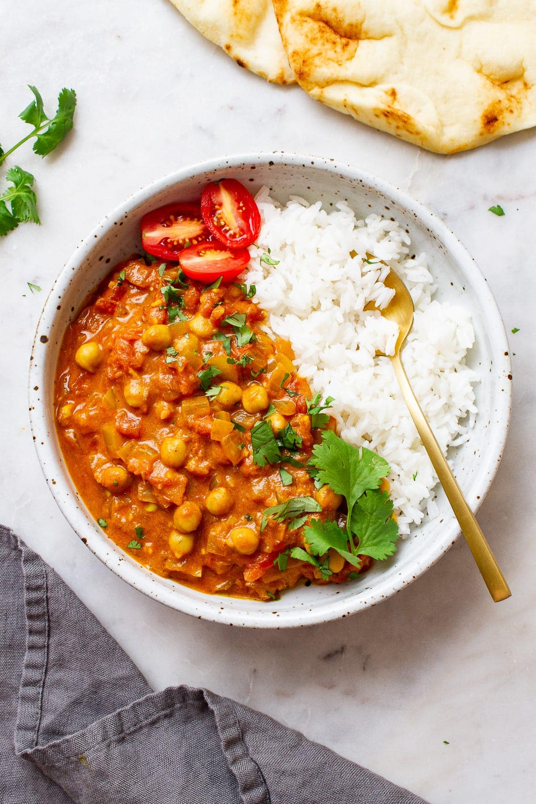

Tikka Masala

Here is a VEGAN Chickpea Tikka Masala for all you
vegan curry lovers. Packed with flavours and spice, this will
satisfy the Indian cuisine craving!
Ingredients
- 2 tablespoons olive oil or 1/4 cup water/broth
- 1 large onion, diced
- 1 teaspoon cumin seeds
- 3 - 4 garlic cloves, minced
- 2 inch piece of ginger, minced or grated
- 1 tablespoon ground coriander, optional
- 1 1/2 teaspoons turmeric
- 1 heaping teaspoon garam masala
- 1/2 - 1 teaspoon cayenne
- 1/2 teaspoon mineral salt
- 2 cans (14oz) diced tomatoes, with juices (or 4 tomatoes chopped)
- 2 tablespoons tomato paste
- 2 cans (14oz) chickpeas (garbanzo beans), drained and rinsed
- >1 can (15oz.) coconut milk (full or low fat - cream is ok too)
Steps
- In a large pot, heat oil or water over medium heat, add onions and cumin seeds, cook for 5 - 7 minute,
until onions are browned around the edges.
- Add the ginger and garlic, cook 1 to 2 minutes more.
- Add the garam masala, turmeric, garam masala, cayenne and cook for 1 - 2 two minutes,
or until nice and fragrant.
- Add tomatoes and cook for 4 minutes, until they breakdown a bit.
- Add tomato paste, chickpeas and coconut milk, stir to combine and
bring to a gentle simmer, stirring occasionally.
- Simmer, covered, for 25 to 30 minutes over low heat, stirring occasionally.
- Adjust seasonings to taste.
- Serve with rice, cilantro lime rice, quinoa, couscous, or pair with vegan naan.